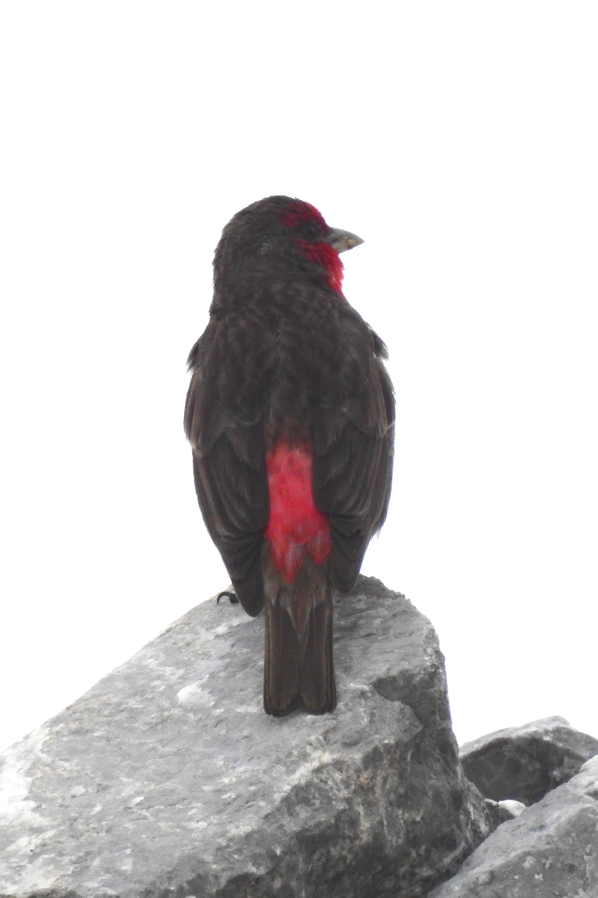
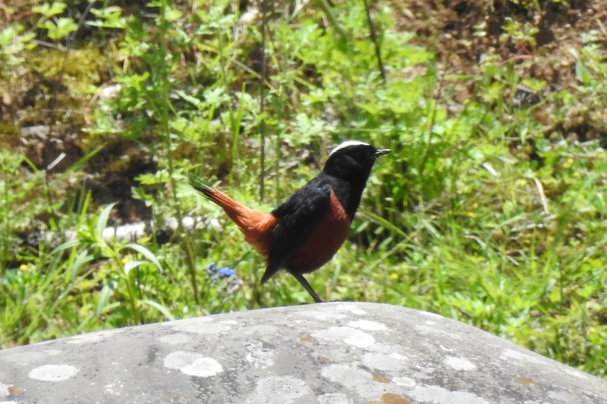
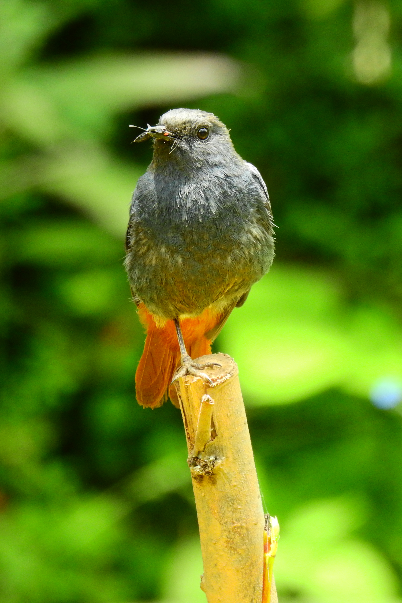

0708玉龙雪山
报了一个美团上的旅游团。
早上7点10司机师傅来接，8点出头到休息点领氧气瓶和租的防寒服。而后吃早餐，之后就上山了。索道排队挺久，大概1h20min，10点半通过大索道到达冰川公园（距离山顶仍有距离，但是能到达的最高处了），海拔大概4571m。
[索道]
刚下山就在附近见到了领岩鹨（的幼鸟），不久后也遇到了成群的成鸟。

TODO rotate 90

爬山略有辛苦，但注意用力呼吸也无大碍，仅在一次奔跑上行30m后略有头晕，少许休息即可。
沿途大量有趣的植物，待鉴定。


而后在接近栈道最高点（4680m，但GPS显示4600m）处发现了红胸朱雀：

很大只，很可爱，值得了。
随便拍了一下雪山风光，盛夏犹有冰川残雪，融化的雪水穿行于峡谷间，随性的咕噜声在呼啸的山风中若隐若现。


12:40下索道，而后乘车去蓝月湖看了看，湖水蓝得跟假的似的，手感很冰，想来是雪水从雪山里带着些神秘的金属离子冲瀑漱下。


蓝月湖旁见到了白顶溪鸲。一只红尾水鸲叼着小虫，或许是回去喂崽？以及一只乌鸦，太远了，大嘴还是小嘴随便吧。


而后集合搭车去休息点还衣服+吃午饭，2点半的午饭实在是有点晚了，土鸡火锅一般般，略有推销但不烦人。在餐馆时又下雨了，云南的雨季真是一天一雨，不过小麻雀看起来已经很习惯了。